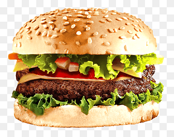

Burger

How to make Burger
Ingredients
- 2 pounds meat
- 1 egg, beaten
- ¾ cup dry bread crumbs
- 3 tablespoons evaporated milk
- 2 tablespoons Worcestershire sauce
- pepper,garlic
Steps
- Preheat a grill for high heat.
- Mix the Meat, egg, bread crumbs, evaporated milk, Worcestershire sauce, pepper, and garlic in a large bowl using your hands.
- Form the mixture into 8 burger patties.
- Lightly oil the grill grate. Grill patties until browned and no longer pink, about 5 minutes per side.
- Serve hot and enjoy